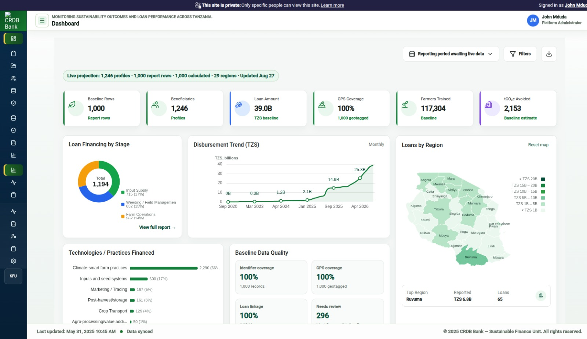
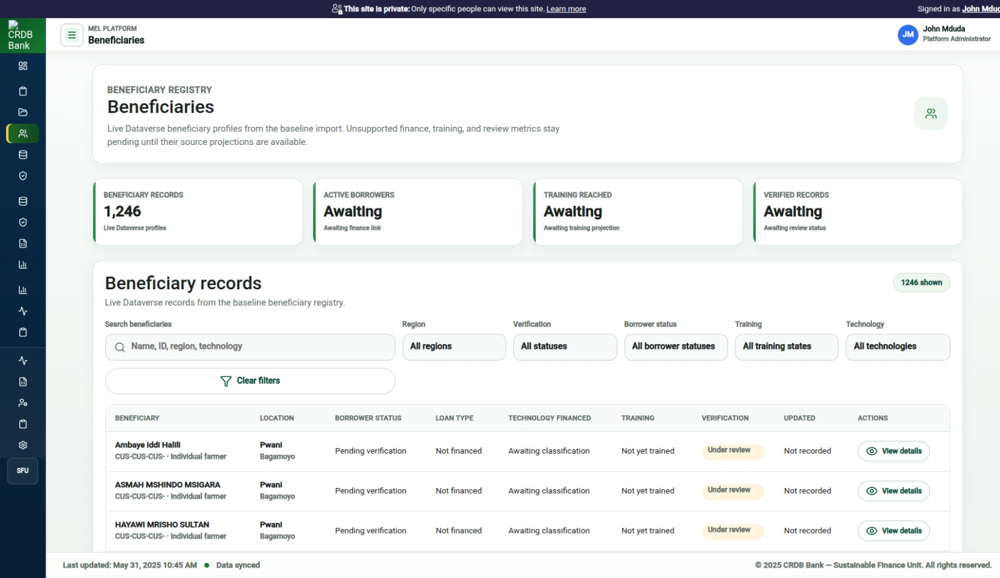
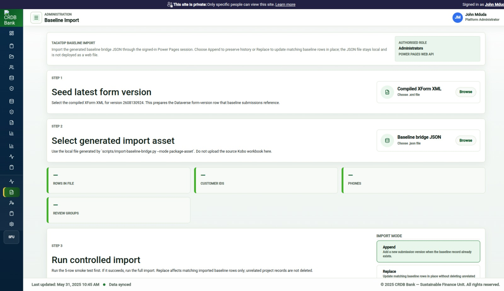
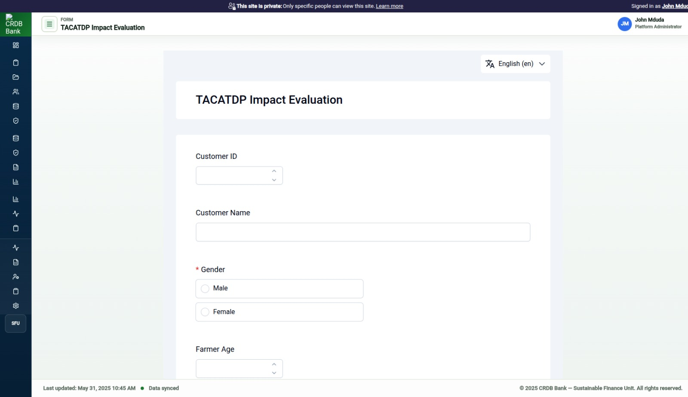
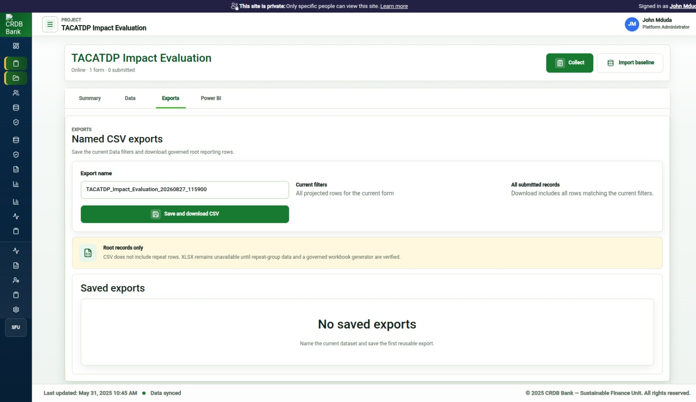

Prototype status, dashboard evidence, user manual, SOP draft, and annex index
27 August 2026
Date: 2026-08-27
System: TACATDP Integrated M&E System and Monitoring Tool
The current prototype demonstrates a Microsoft-hosted monitoring, evaluation, and reporting workflow for TACATDP. It includes an authenticated Power Pages portal, Dataverse-backed form and submission storage, a baseline import workflow, a beneficiary registry view, dashboard visualisation, reporting/export pathways, and role-based administration screens.
The cleaned TACATDP baseline dataset has been successfully imported through the prototype import workflow. The CRDB development environment has also been updated with the latest working portal build. The remaining CRDB-side activities are operational: seed or confirm the latest form version, import the cleaned baseline dataset through the portal, and verify CRDB permissions for the relevant user roles.
An important change was received from CRDB ICT on Tuesday: ICT is recommending a CRDB-hosted deployment strategy instead of continuing with the Microsoft Power Pages and Dataverse environment. That change affects the future production architecture. A rebuild has already started around the proposed CRDB-hosted strategy so that a working system can be ready when CRDB’s environment is available.
| Stage | Status | Details |
|---|---|---|
| Requirements discovery | Completed for prototype; revised for future deployment | TACATDP was treated as the first programme configuration for a broader MEL capability. |
| Prototype architecture | Completed | Power Pages hosts the app shell and authentication. Dataverse stores forms, submissions, baseline projections, beneficiary profiles, and configuration records. |
| Application shell | Completed | CRDB-branded navigation, top bar, content area, route separation, and footer are implemented. |
| Form runtime | Completed for prototype | The tool uses an XForms/web forms runtime to render the TACATDP form from a stored form version. |
| Latest form version | Implemented | Version 2608130924 is the expected active form version for baseline import and future data updates. |
| Baseline import | Completed for prototype | Cleaned baseline data was imported through the portal import workflow. The same import path is available in CRDB subject to user permissions. |
| Beneficiary registry | Implemented for prototype | Imported baseline data is projected into beneficiary-facing records and detail views. |
| Dashboard visualisation | Implemented for prototype | Dashboard cards use live baseline projections where the imported data supports the metric. Unsupported metrics remain explicitly pending. |
| Reporting/export | Implemented for prototype | Reporting rows and export pathways exist for imported submissions and projected baseline data. |
| User and access management | Implemented for prototype | User, role, access, and assignment concepts are represented. Automation depends on CRDB permissions and ownership. |
| CRDB environment update | Completed | Latest working Power Pages build was deployed to the CRDB development environment. |
| Production hardening | Pending | Depends on final deployment strategy, CRDB infrastructure, security review, and integration permissions. |
The cleaned baseline data has been imported through the portal workflow and used to validate dashboard, beneficiary, reporting, and import behavior.
The CRDB development environment has been updated with the latest tested Power Pages build.
Known CRDB environment details:
| Item | Value |
|---|---|
| Environment | TACATDP-CRDB-Dev |
| Environment URL | https://org5eb0379b.crm4.dynamics.com/ |
| Portal URL | https://tacatdp-crdb.powerappsportals.com/ |
| Website | TACATDP Monitoring Tool |
| Website ID | fccc0cc6-7f5e-4885-aeb8-2272e68130a3 |
| Current form version | 2608130924 |
The cleaned baseline dataset was prepared from the shared TACATDP DAP dataset folder.
Current cleaned-data profile:
| Item | Count |
|---|---|
| Root beneficiary baseline rows | 1,246 |
| Loan/value-chain child rows | 1,484 |
| Value-chain cost rows | 7,585 |
| GPS rows | 1,246 |
| Regions | 29 |
| Districts | 130 |
| Wards | 415 |
| Total reported loan amount in baseline | TZS 51.6B |
The import treats each row as a form submission. This preserves the field-data lineage and keeps the platform ready for future follow-up data collection.
The dashboard uses baseline-derived values only where the imported data supports the calculation.
| Dashboard area | Current data source | Status |
|---|---|---|
| Beneficiary count | Imported baseline registry/projection | Available after import |
| Report rows | Imported submission report rows | Available after import |
| Reported loan amount | Baseline total_loan_amount and loan repeat data | Available after import |
| Regional map | Baseline region and amount fields | Available after import |
| Financed technologies/practices | Baseline technology fields and value-chain stage fallback | Available where source fields exist |
| Training metrics | Baseline training fields | Available where source fields exist |
| Climate outcome estimates | Baseline-supported calculations only | Available where source fields support a defensible calculation |
| Loan performance | Core banking/repayment feed | Pending |
| Monthly disbursement trend | Dated loan repeat records | Pending unless dated loan records are exposed to the dashboard projection |
The dashboard does not present unsupported figures as official values. If a feed is missing, the UI shows a pending or unavailable state.
| Role | Prototype responsibility |
|---|---|
| Platform Administrator | Manage form version seed, baseline import, user/access setup, and environment checks. |
| M&E Manager | Review dashboard, reporting outputs, SOPs, and system readiness. |
| MEL Officer | Review dashboard, beneficiary records, submissions, and monitoring outputs. |
| Data Collector / Field Officer | Complete assigned TACATDP forms. |
| Reviewer / Approver | Review submitted data and verify reporting outputs. |
| ICT / System Administrator | Manage environment, permissions, deployment, hosting, and integration readiness. |
CRDB ICT has recommended moving toward CRDB-hosted infrastructure instead of continuing only with Microsoft Power Pages and Dataverse. This changes the production direction.
Implications:
2608130924 in the CRDB environment.Date: 2026-08-27
This document supports the required dashboard screenshot deliverable.
The dashboard screenshot shows the TACATDP monitoring dashboard after baseline data has loaded. The screenshot is prototype evidence and is not an official CRDB Bank or Green Climate Fund report.
The screenshots show the current deployed prototype build, including dashboard, beneficiary registry, baseline import, form runtime, and reporting/export capability.
| File | Purpose |
|---|---|
assets/01-dashboard-overview.jpg | Dashboard overview with baseline KPI projection, map, technology/practice chart, and baseline data-quality card. |
assets/02-beneficiaries-list.jpg | Beneficiary registry/list view populated from imported baseline records. |
assets/03-baseline-import.jpg | Baseline import route used by administrators to append or replace cleaned baseline data. |
assets/04-form-runner.jpg | Field data collection form runtime. |
assets/05-reporting-export.jpg | Reporting/export route for submitted baseline records. |
Primary visual evidence:

Additional prototype evidence:




The screenshot should show:
Use this caption:
> Dashboard interface showing prototype TACATDP baseline monitoring projections. Values shown are derived from imported baseline data where available. Metrics that require CRDB operational feeds are excluded from the dashboard until the approved source data is connected.
| Metric area | Interpretation |
|---|---|
| Beneficiaries | Imported baseline beneficiary profiles or report rows. |
| Reported amount | Reported loan amount from the baseline dataset. |
| Regional map | Baseline regional coverage and reported loan amount by region. |
| Technologies/practices | Baseline technology fields or financed value-chain stages where exact technology fields are unavailable. |
| Training | Baseline training fields where present. |
| Baseline data quality | Completeness and linkage checks derived from imported baseline records. |
| Disbursement trend | Requires dated loan records exposed to the dashboard projection. |
Date: 2026-08-27
This manual explains how users operate the TACATDP Integrated M&E System and Monitoring Tool prototype.
The prototype supports authenticated access, form version setup, baseline data import, dashboard review, beneficiary review, and reporting/export review.
| Role | Main tasks |
|---|---|
| Platform Administrator | Prepare the form version, import baseline data, manage access, and support users. |
| M&E Manager | Review dashboard outputs, reports, system status, and SOP compliance. |
| MEL Officer | Review monitoring dashboard, beneficiary records, submissions, and reporting projections. |
| Data Collector / Field Officer | Open assigned forms and submit data. |
| Reviewer / Approver | Review submitted records and confirm data readiness. |
| ICT / System Administrator | Manage environment access, deployment, permissions, and support. |
If access is denied, contact the Platform Administrator or ICT administrator. A successful Microsoft sign-in does not automatically grant application access. The user also needs site visibility, web role, table permissions, and form assignment where applicable.
Overview or Dashboards.If a card shows a pending state, the required source data may not be available yet. Do not treat pending values as zero.
This task is for Platform Administrators only.
#/baseline-import.``text artifacts/xforms/tacatdp_impact_evaluation-2608130924.xml ``
2608130924 as ready.This step prepares the form version that baseline submissions and future data updates reference.
This task is for Platform Administrators only.
#/baseline-import.2608130924.Append to preserve history.Replace to update matching baseline rows in place.Do not upload the original Kobo workbook directly into the browser import control. The browser import expects the generated JSON bridge asset.
Beneficiaries.The prototype beneficiary view is a registry projection from imported submissions. Production registry governance must be finalized during the next architecture phase.
Data Submissions or Reports.If reporting reads fail, the user may be missing table permissions for the relevant Dataverse table.
| Pending state | Meaning |
|---|---|
| Awaiting live data | The app has not received readable live rows yet. |
| Awaiting loan financing data | The required loan fields are not available in the current projection. |
| Awaiting dated loan records | Monthly trend cannot render until dated loan records are available. |
| Pending loan performance feed | Repayment and portfolio quality require CRDB operational loan-performance data. |
| Data unavailable | The current user may lack permission, or the source table may not be configured for Web API access. |
When reporting an issue, include:
Date: 2026-08-27
These draft standard operating procedures define how different user levels operate the TACATDP Integrated M&E System and Monitoring Tool prototype.
The SOPs should be finalized after CRDB confirms the final system configuration, deployment strategy, user roles, and permission model.
| Area | Responsible role |
|---|---|
| System access and permissions | ICT / Platform Administrator |
| Form version control | Platform Administrator and M&E Manager |
| Baseline import | Platform Administrator |
| Data collection | Data Collector / Field Officer |
| Submission review | MEL Officer and Reviewer / Approver |
| Dashboard review | M&E Manager and MEL Officer |
| Reporting | M&E Manager and MEL Officer |
| Production support | ICT / System Administrator |
#/baseline-import.Current approved prototype form version:
``text 2608130924 ``
#/baseline-import.Do not interpret missing data as zero. Pending states must be reported as pending.
These SOPs are draft because the final CRDB deployment strategy is changing. They should be revised after CRDB confirms:
Date: 2026-08-27
This document lists the annexes used to support the TACATDP Integrated M&E System and Monitoring Tool submission.
Do not include raw beneficiary data in an external sharing pack unless CRDB authorizes the recipient and channel.
| Annex | Source |
|---|---|
| Prototype acceptance scope | docs/powerpages-odk-webforms/prototype-acceptance-scope-20260812.md |
| Power Pages ODK/web forms requirements | docs/powerpages-odk-webforms/requirements.md |
| Acceptance criteria | docs/powerpages-odk-webforms/acceptance-criteria.md |
| Dashboard ECharts slice | docs/powerpages-odk-webforms/tacatdp-dashboard-echarts-slice-20260810.md |
| Annex | Source |
|---|---|
| Cleaned DTA baseline import plan | docs/powerpages-odk-webforms/cleaned-dta-baseline-import-plan-20260826.md |
| Baseline browser import route | docs/powerpages-odk-webforms/baseline-browser-import-mshirika-20260814.md |
| Baseline import dry run | docs/powerpages-odk-webforms/baseline-bridge-import-dry-run-20260814.md |
| Cleaned import dry-run summary | artifacts/import-assets/reference/tacatdp-cleaned-dta-dry-run.json |
| Latest compiled XForm XML | artifacts/xforms/tacatdp_impact_evaluation-2608130924.xml |
| Annex | Source |
|---|---|
| Microsoft environment permission map | docs/powerpages-odk-webforms/crdb-microsoft-environment-permission-map-20260813.md |
| CRDB Microsoft resources and permissions | docs/powerpages-odk-webforms/crdb-microsoft-resources-permissions-20260813.md |
| Power Pages deployment readiness | docs/powerpages-odk-webforms/crdb-deployment-readiness-20260730.md |
| ODK Central-inspired schema | schemas/dataverse/odk-central-inspired-mvp-schema.md |
| Beneficiary entity extension schema | schemas/dataverse/beneficiary-entity-extension-schema.json |
| Annex | Source |
|---|---|
| Access management requirements | docs/powerpages-odk-webforms/access-management-requirements.md |
| Access permission matrix | docs/powerpages-odk-webforms/access-permission-matrix-20260721.md |
| User/access route implementation notes | docs/powerpages-odk-webforms/access-create-invite-assign-ux-20260722.md |
| Onboarding queue requirements | docs/powerpages-odk-webforms/access-onboarding-queue-requirements-20260724.md |
Captured screenshots:
| Annex | File |
|---|---|
| Dashboard overview | docs/submission-pack-20260827/assets/01-dashboard-overview.jpg |
| Beneficiaries list | docs/submission-pack-20260827/assets/02-beneficiaries-list.jpg |
| Baseline import route | docs/submission-pack-20260827/assets/03-baseline-import.jpg |
| Field form runner | docs/submission-pack-20260827/assets/04-form-runner.jpg |
| Reporting/export route | docs/submission-pack-20260827/assets/05-reporting-export.jpg |